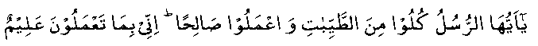

Nabi (Sallallahu Alayhi Wasallam) once said: "As Allah Ta’ala Himself is above all faults, He therefore blesses with His grace only the pure things. He instructed the Muslims, what He has laid down for His Ambiyaa alayhimus salaam. He says in the Holy Qur-aan:

"O! You Ambiyaa, Eat of the good things and do right. Lo! I am aware of what you do." (XXIII: 51)
O! You, who believe, eat of the good things wherewith we have provided you." (II: 172)
Then Nabi (Sallallahu Alayhi Wasallam) mentioned about a person who is a traveler with untidy hair and dusty clothes, raising his hands towards the heaven, he calls out: "O, Allah! O, Allah!" but his food, drink and dress are all from haraam sources. So, Allah Ta’ala would never listen to him and would not answer his duas, even though his outward condition showed him to be deserving.
People wonder why the Duas of the Muslims are not always fulfilled by Allah Ta’ala. The reason is easy enough to understand in the light of the above Hadith.
Allah Ta’ala does sometimes grant the dua of even a Kafir (not to mention the dua or requests of a sinful Muslim). It is particularly the dua of a pious person that is seldom rejected. That is the reason why people generally seek the Duas of such pious persons for themselves.
Therefore, those who wish to have their duas accepted must abstain from haraam. No wise person would like to run the risk of his duas being rejected.